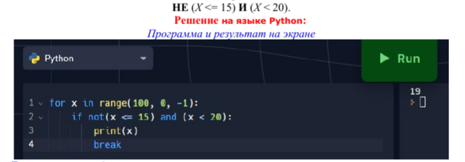

Напишите наибольшее целое число x, для которого истинно высказывание:
Напишите наибольшее целое число x, для которого истинно высказывание:
У исполнителя Комп две команды, которым присвоены номера:
1. Прибавь 3;
2. Умножь на b
(b — неизвестное натуральное число; b ≥ 2). Выполняя первую из них, Комп увеличивает число на экране на 3, а выполняя вторую, умножает это число на b. Программа для исполнителя Комп — это последовательность номеров команд. Известно, что программа 11121 переводит число 3 в число 75 Определите значение b.
У исполнителя Оскар две команды, которым присвоены номера.
1. прибавь 3;
2. раздели на b
(b — неизвестное натуральное число; b ≥ 2). Выполняя первую из них, Оскар увеличивает число на экране на 3, а выполняя вторую, делит это число на b. Программа для исполнителя Оскар — это последовательность номеров команд. Известно, что программа 11121 переводит число 30 в число 6 Определите значение